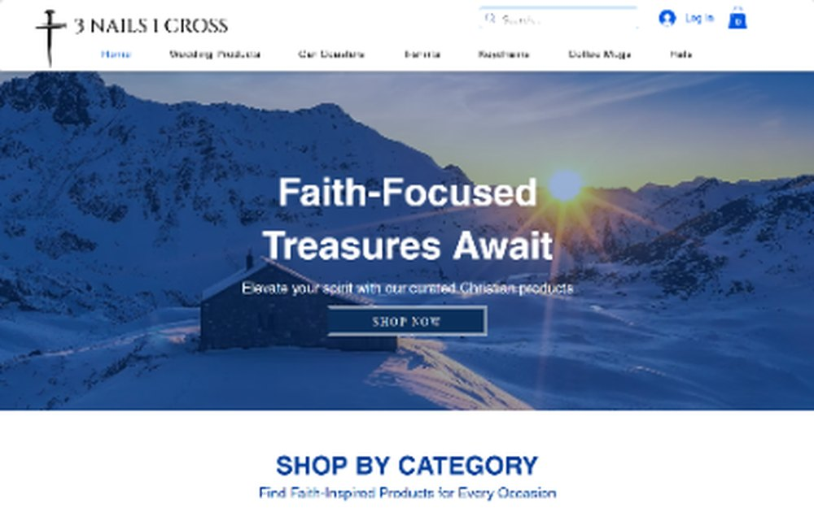

Find the right product
Collections, filters and navigation that make the catalogue easier to explore.
Ecommerce design & improvement
A stronger online store helps people find what fits, choose with confidence and reach checkout without unnecessary friction.

Selected ecommerce work3 Nails 1 CrossWhere I focus
Improvements should serve a real buying decision, not add visual clutter.
Collections, filters and navigation that make the catalogue easier to explore.
Clear product pages for variants, details, images, bundles and buying questions.
A mobile-friendly cart, helpful upsells and fewer obstacles before purchase.